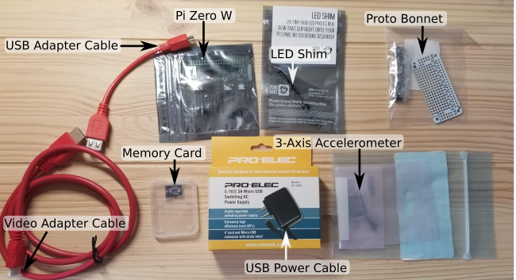

Welcome, young Pi-dawans
Getting started with the Neurobionics Pi Zero Science Kit
Your kit should include
- Raspberry Pi Zero W Basic Kit
- Raspbery Pi Zero W board
- USB charging cable
- USB adapter cable
- Video adapter cable
- Memory card pre-programmed with Neurobionics Outreach Image
- MSA301 Tripple Axis Accelerometer
- LED Shim from Pimoroni Ltd
- Adafruit Perma Proto Bonnet Mini
Soldering the Hardware
A detailed pinout for the raspberry pi device can be found at pinout.xyz. The led shim comes with a python library. Like other hardware devices from adafruit and the greater raspberry pi community, these links can be found easily with a bit of googling.
Setting up the the LED shim
Our first order of business is to download the libraries for running the Pimoroni LED shim. They provide a web-service where users can access a helpful installation script (which you can download at https://get.pimoroni.com/ledshim). This script is pretty long and complex, but all we need to do is download and run it. Since the Pi is a GNU/Linux system, we can use the "curl" command to download files and then "pipe" ('|') the file to our interpreter ("bash"). (This is a handy way of setting up installation in user-friendly projects, but do beware that there are no security features for curl piped to bash. It relies on your trust of the website not to host a malicious script.)
pi@raspberrypi:~ $ curl https://get.pimoroni.com/ledshim | bash
[...]
This script will install everything needed to use
LED SHIM
Always be careful when running scripts and commands copied
from the internet. Ensure they are from a trusted source.
[...]
Do you wish to continue? [y/N] y
[...]
Do you wish to perform a full install? [y/N] y
This script, from the manufcturer of the LED shim, will enable the i2c protocol (which may not be enabled by default on the image) and download and install the necessary python packages to use the LED shim.
That's it for installing the LED shim libraries! Now it should be availiable through importing "ledshim". Check out the library's documentation at http://docs.pimoroni.com/ledshim/.
LED shim demo
Here's a simple example program from the Pimoroni git repository. It makes the device "glitter" in the sense that all the 28 pixels randomly change color every 0.05 seconds.
import random import time import ledshim ledshim.set_clear_on_exit() ledshim.set_brightness(0.4) while True: for i in range(ledshim.NUM_PIXELS): ledshim.set_pixel(i, random.randint(0, 255), random.randint(0, 255), random.randint(0, 255)) ledshim.show() time.sleep(0.05)
To get this demo onto your Pi, there are several options. If you like playing on hard mode, you can type the program into the Pi using "nano", the no-frills text editor you used to set up the wifi connections if you followed the instructions on OSL website. Easier methods include (1) finding the git repository and using git to download the file (it's in the examples folder), (2) copy-pasting the code from this website to a new file on your actual computer, and then sending that file onto the pi using a ssh tool like PuTTY, and, if your native computer happens to be linux or mac, (3) setting up a mapped directory in your actual computer using sshfs, so you can edit the files on your Pi like the Pi was just some special folder on your host computer.
Once we ssh into the pi, we're in the home directory for the pi user:
pi@raspberrypi:~ $ ls
2020-03-10-125103_3840x2160_scrot.png code Desktop startup
First, we're going to make a new directory for our main code workspace, or wk for short:
pi@raspberrypi:~ $ mkdir wk
pi@raspberrypi:~ $ ls
2020-03-10-125103_3840x2160_scrot.png code Desktop startup wk
Then, we'll move into that directory and get our code in there one way or another.
pi@raspberrypi:~ $ cd wk
pi@raspberrypi:~/wk $ nano led_shim_demo.py
If you used nano, remember that you'll need to use ctrl-s to save and ctrl-x to quit. Nano emulates the Pico text editor which is from 1989.
Once this code is on your Pi, run it by calling python3
pi@raspberrypi:~/wk $ python3 led_shim_demo.py
And enjoy your glittering electronic device! To stop, press ctrl-c.
Setting up the MSA301 accelerometer
Next, we need to get library for the MSA301 accelerometer chip. Thanks to the previous step, I2C communication is already enabled for the Pi, so we just need to install this library using pip3, and test it out. For the accelerometer, we will use the Adafruit_CircuitPython_MSA301 library.
pi@raspberrypi:~/wk $ pip3 install adafruit-circuitpython-msa301
(There will be several lines of text after you type this command, which describe all the dependent libraries you are also installing in order to make the msa301 library work.)
to test this library, we'll use a program (msa301_simpletest.py) from the examples folder from Adafruit's git repository:
import time import board import busio import adafruit_msa301 i2c = busio.I2C(board.SCL, board.SDA) msa = adafruit_msa301.MSA301(i2c) while True: print("%f %f %f" % msa.acceleration) time.sleep(0.5)
Like the other demo program, there are several ways to get this file onto the Pi. Again we'll run it using python3
pi@raspberrypi:~/wk $ python3 msa301_simpletest.py
When it runs, it should print out the accelerometer raw readings to your screen. They are in meters per second by default. On the top of the accelerometer chip, there is a little decal showing which way the x-y-z axes are pointing. You may notice that, even when it's not moving it detects acceleration! Moreover, this acceleration is upwards!? This is because the accelerometer detects acceleration relative to an inertial reference frame, and thanks to gravity, this inertial reference frame is being sucked into the center of the planet at a constant acceleration. When the device is not moving on the surface of the planet, it's because we're accelerating it upwards to counteract it's natural acceleration downawards. If the accelerometer were in freefall or in an earth orbit, it would read zero-acceleration! As before, to stop, press ctrl-c.
The Jump Detector Program
Now that we have these two pices of hardware, we can build a simple wearable robotics demo that involves sensing, thinking, and acting. The idea is to build a jump detector, a program that (1) uses the accelerometer to detect when the person is in free-fall (i.e. jumping!), (2) times how long the person is in the air, (3) uses some simple ballistic math to figure out how high they must have jumped, and (4) visualizes that answer using the Pimoroni LED shim's 1x28 pixel display.
import random import ledshim import time import board import busio import adafruit_msa301 i2c = busio.I2C(board.SCL, board.SDA) msa = adafruit_msa301.MSA301(i2c) ledshim.set_clear_on_exit() ledshim.set_brightness(0.4) is_jumping=False jump_time=0.0 loop_period=0.05 # seconds last_jump_height=0.0 next_iter=time.time()+loop_period while True: while time.time()<next_iter: time.sleep(0.00) next_iter+=loop_period x, y, z = msa.acceleration # print("%f %f %f" % msa.acceleration) # acceleration squared < threshold squared is_freefall = x**2+y**2+z**2 < 40 if is_freefall: # if we're in freefall, then we're jumping! # print("jumping!") if not is_jumping: # the jump must have just started is_jumping = True jump_time = 0.0 else: # the jump must be continuing jump_time+=loop_period else: # no freefall == not jumping! if is_jumping: # the jump must have just ended is_jumping = False # simple ballistics last_jump_height = 9.81 * .5 * (jump_time/2)**2 # a bar glitters. It's size is proportional to the jump height for i in range(ledshim.NUM_PIXELS): if i <= last_jump_height*100: # glitter mode ledshim.set_pixel(i, random.randint(0, 255), random.randint(0, 255), random.randint(0, 255)) else: # off mode ledshim.set_pixel(i, 0, 0, 0) ledshim.show()
To explain this program, we first set up the "msa" object and the "ledshim" library state as in the previous two demos. Then we define the program's memory variables in their initial conditions (is_jumping, jump_time, loop_period, last_jump_height, next_iter). The subsequent "while True" begins a loop that goes forever (or until we press ctrl-c). The next "while" loop is known as a "busy wait loop", and waits for the next iteration to start by checking over and over to see if it is the right time yet. Next, we measure the accelerometer values, and compare them to a threshold to determine if the device is in freefall. Because the sensor is noisy, this threshold needs to be pretty big to detect freefall reliably. But it definitely needs to be below 96.24 m^2/s^4, or it will detect free-fall even when the device is stationary!
Next, we need to enter into some conditional logic to determine if we are starting to jump, finishing a jump, continuting a jump, or continuing to not be jumping. This part is explained in the code comments. After we're done with the conditional logic, we apply simple ballistics to map from jump_time to last_jump_height. These ballistics should seem pretty familiar: we're looking point mass being acted on by gravity as it flies in a parbolic arc. If the total time is jump_time, then the time between the apex of the parabola and the crash landing is jump_time/2. This means that the mass, which has zero downward velocity at the apex, is acted on by 9.81 m/s/s for jump_time/2 seconds before landing.
With this estimate of the height, the code provides a visualization by modifying the glittering demo so that only part of the 28 pixel bar glitters. How much of the bar glitters is based on last_jump_height*100, so we get 1 pixel for each centimeter of jump height.
When it's all done, you should see a demo like in the following video! In the spirit of wearable robotics, I've made a simple belt-attachment using some masking tape and balsa wood.